一位义务支教近二十年的乡村教师。剪辑定稿的「纯净版」交出之后，包装开始： 22 张叙事卡片、925 条字幕、7 段福哥音色旁白、3 秒栏目片头、45.4 秒序章与一支新片尾—— 全部用 Python + ffmpeg 写成可复现的管线，把 29:24 的主片装配成 31:12 的定稿版。 这一页记录每一层包装怎么做、为什么这么做，以及还缺什么。
原料是 191GB 广播级素材（三机位访谈 5 个 take + 约 110 段 B-roll）。重剪管线约 14 小时 （7-21 晚 → 7-22 午）跑完代理、转写、语义标注与十五版粗剪，交出包装管线的输入—— 1920×1080 · 31:29 的「纯净版」。以下每一步的产物都留在工作目录里，可复查。
全套卡片由 gen_cards.py 用 Pillow 直接绘制：暖金黄 #D4AF37 取自栏目「福」字 logo， 纸色文字、细线双框、衬线标题。版式即品牌，页面亦沿用同一套语言。
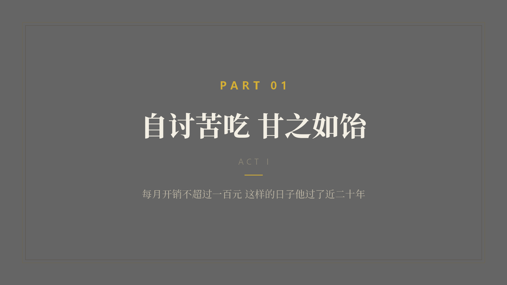
五张卡：序章 + PART 01–04。版式四层信息——金色 PART 序号（字距拉宽）、 衬线大标题、金色短线、一行灰色「题眼」。
题眼让观众带着问题进入下一幕：PART 04 的题眼是「他也怀疑过自己 但从未停下」。
卡片以 60% 压黑底叠加在画面上、alpha 淡入淡出 0.4s， 每章停留 3.2s——是段落缓冲，也是叙事标点。
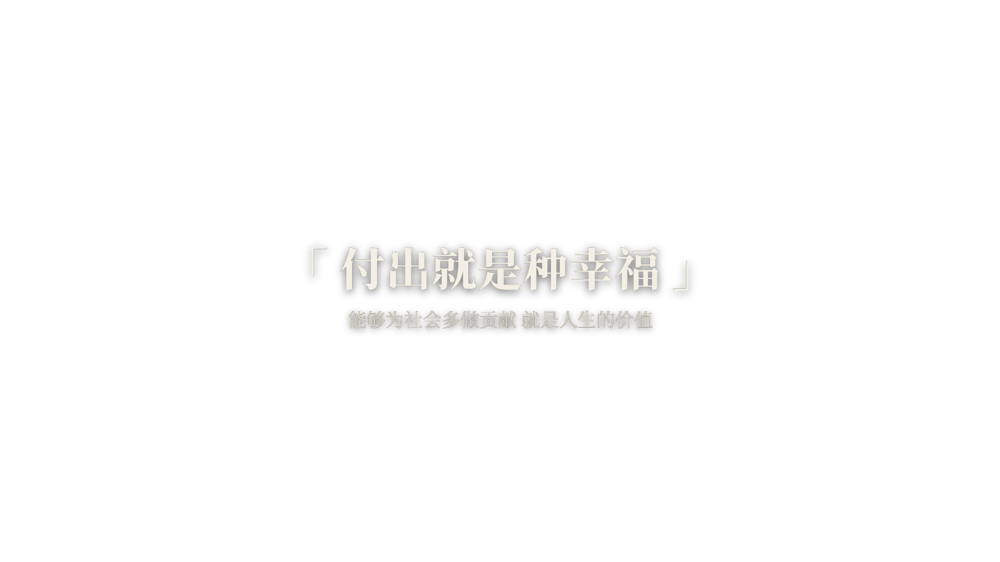
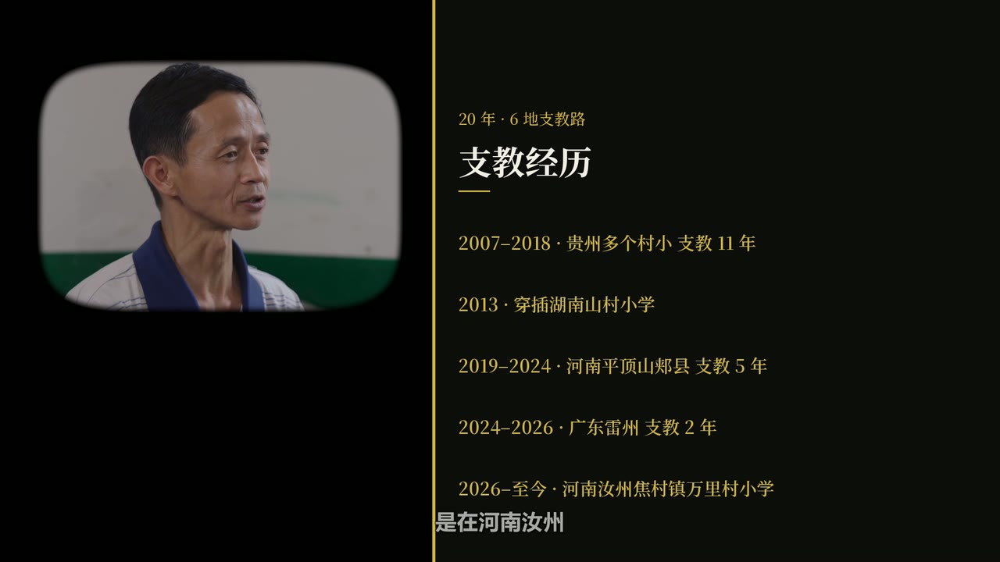
数据卡落在左下象限：深色半透明面板 + 金色竖线锚定，一屏一数， 静态大数字——不做滚动动画，克制才可信。
人名条同一锚点语言：姓名大字 + 身份小字 + 左侧金色竖线， 出现 6s，alpha 淡入淡出。
所有卡片与字幕共用原片时间坐标系，落点写死在 render.py 的 OVERLAYS 表里，随时可改可重渲。
访谈主体段落一律不加旁白，保住对谈现场感。旁白只落在序章 6 句与尾声引入 1 句， 承担设问、转折与时空跨越。全部 7 段已改用福哥克隆音色——由栏目创办人亲自「讲述」，叙事更贴身。
sidechaincompress 的旁白输入流较短，到达 EOF 时把整个 filter 图提前终止，主音频随之中断。apad 补静音再进侧链；输出后强制校验——音轨与视频时长差 <0.5s 才放行。原片开头的旧蒙太奇与序章立意重复，整段弃用；26.88–29.92s 的芥末黄栏目卡则移到序章之前，成为 3 秒片头。 新序章由 build_prologue2.py 单独装配：四段结构、6 段福哥音色旁白落点、一条贯穿全序章的连续音乐床（帧级音量曲线随段落起伏）—— 与正片同一条滤镜、同一份响度测量，接缝听不出来。
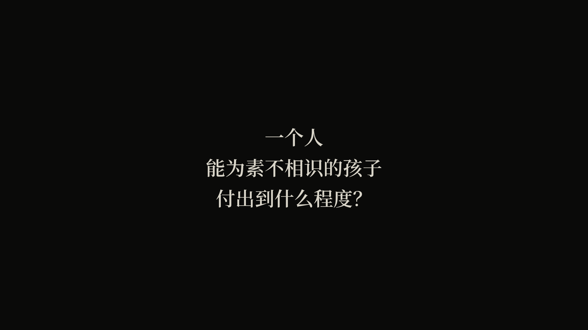
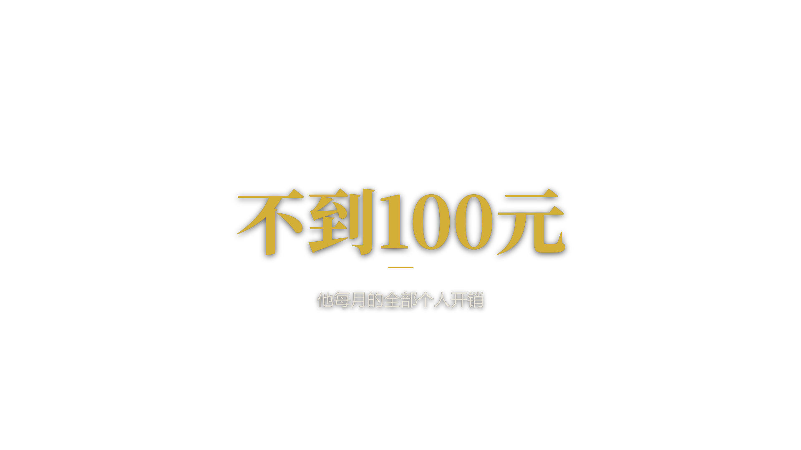
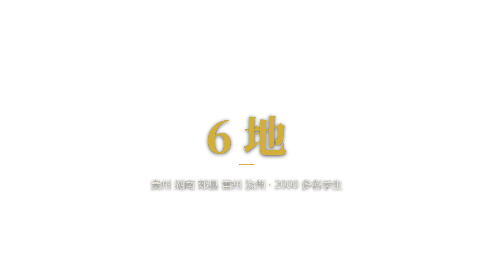
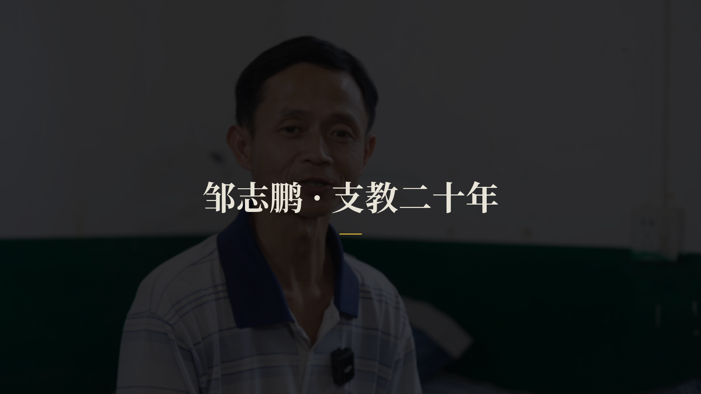
以下为定稿片尾段 1812–1872s 的逐点抽帧（尾声文字卡叠生活画面 + 钢琴配乐段）， 核验卡片与画面的叠印关系与出入场节奏。
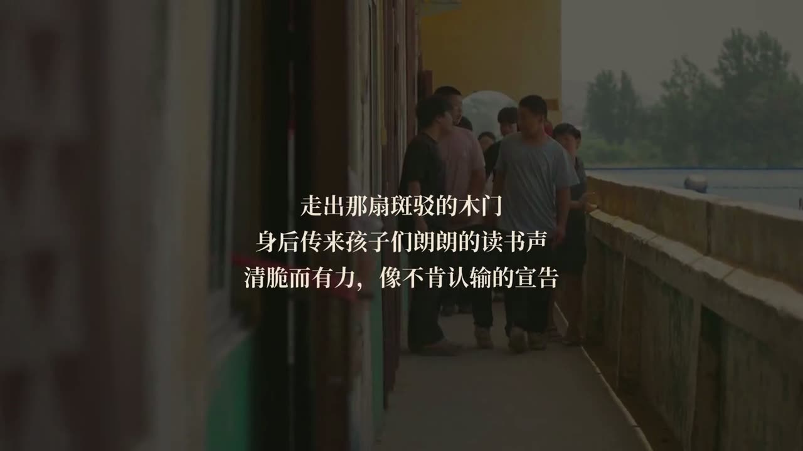
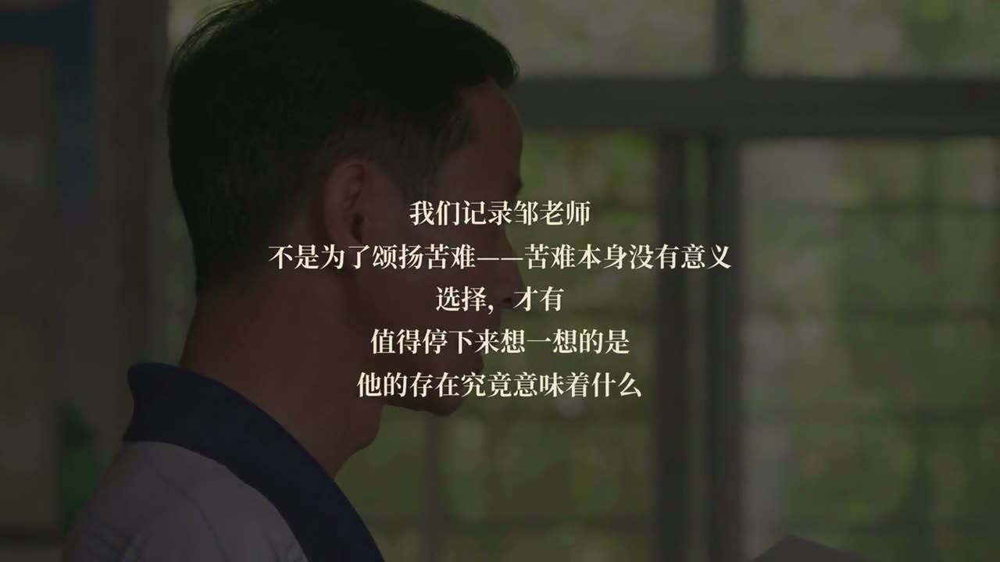
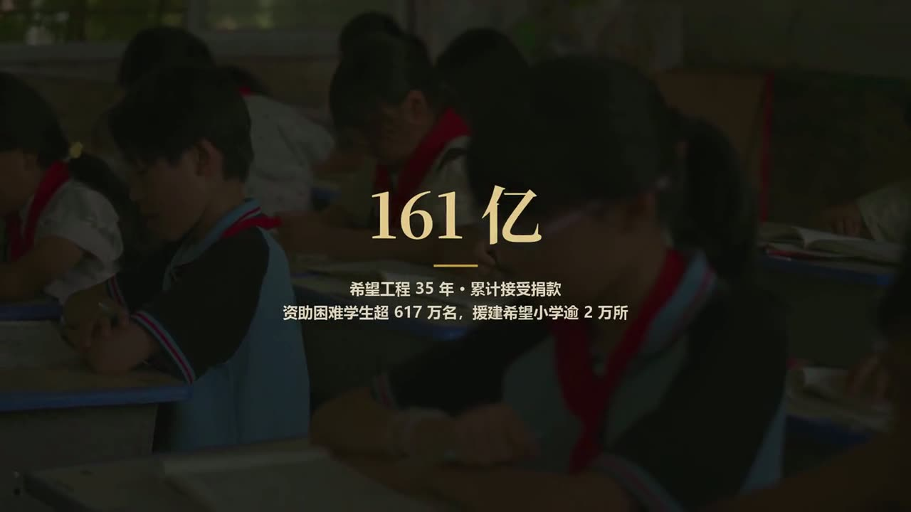
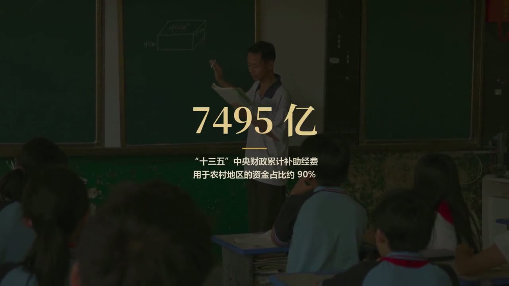
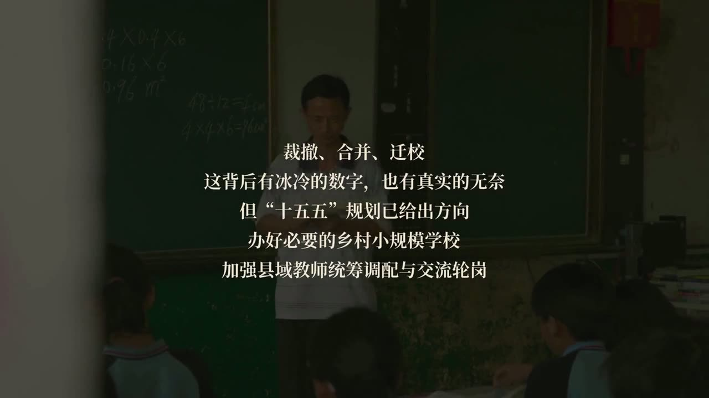
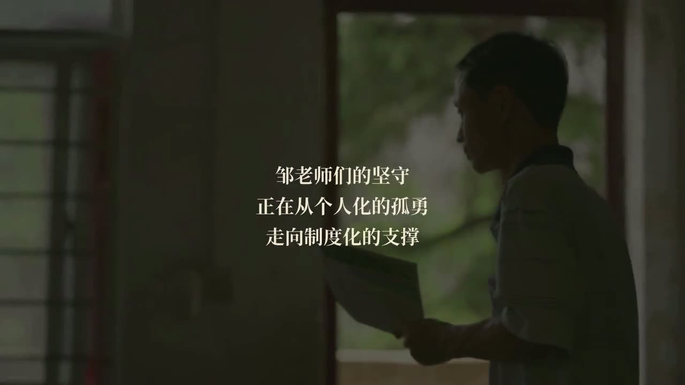
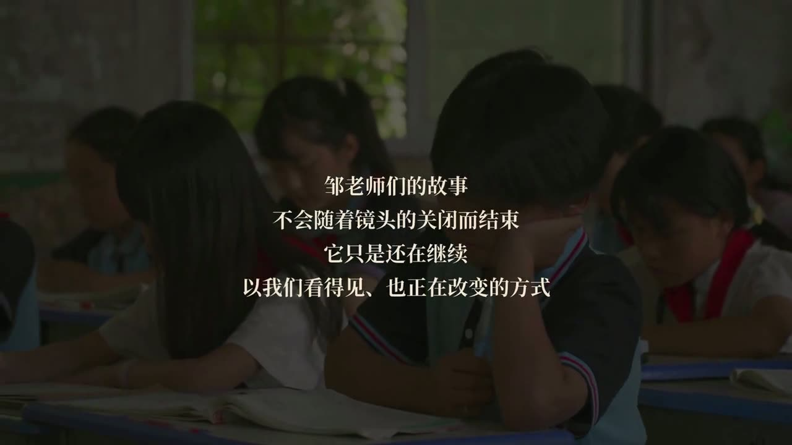
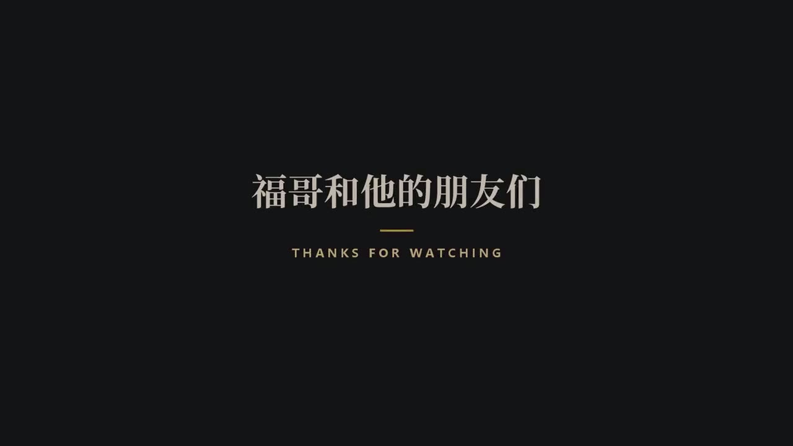
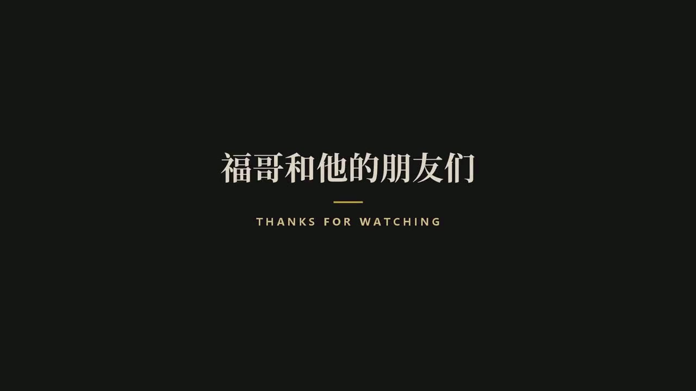
| 文件 | 日期 | 大小 | 说明 |
|---|---|---|---|
| 邹志鹏-包装版-含尾声旁白-序章版.mp4 | 2026-07-25 | 1.3 GB | 定稿：片头 + 序章 + 正片 + 尾声旁白（31:12，本站 720p 预览版由此转码） |
| 邹志鹏-包装版-无旁白-序章版.mp4 | 2026-07-25 | 1.3 GB | 定稿 · 无旁白备选 |
| 邹志鹏-包装版-含尾声旁白.mp4 | 2026-07-23 | 2.1 GB | 旧版：正片 + 尾声旁白（无序章、无片头） |
| 邹志鹏-包装版-无旁白.mp4 | 2026-07-23 | 2.1 GB | 旧版：纯净正片（无序章、无片头、无旁白） |
| 邹志鹏-包装版.mp4 | 2026-07-25 | 1.2 GB | 渲染母版（混音视频源） |
成片规格：1920×1080 · 25p · H.264 High + AAC 320k · 响度 −16 LUFS / TP −1。 公网站点仅随附 720p 网页预览版，以上大文件不做公开分发。